Making "not assessed" an honest, first-class state in the AI interview platform, from the database to the recruiter's screen.
| Pull request | [PR link to be added after the branch is pushed]. Option A: one PR containing the full change across api/ and web/. |
|---|---|
| Video walkthrough | [Video link to be added]. 3–5 minutes, end-to-end flow before and after. |
| Claimed depth | Backend-heavy: generator rewrite, migration, idempotent jobs, tenant isolation, response validation. Plus a full frontend slice: new states, the API seam fix, and responsive layout. |
| Tests | 49 RSpec examples (from zero) and 18 Vitest tests (no runner before), all green. CI runs both on every PR. |
The core problem. When an interview ends before every skill is discussed (time limit, connection error, candidate leaves), the platform still gives each undiscussed skill a level. Any missing or invalid model level is silently coerced to L1 by .to_i.clamp(1, 5). The fit/gap report then shows that fabricated L1 as "Gap −2", the AI writes a hiring recommendation from it, and the screen presents it with the same authority as a well-evidenced rating.
A candidate who was never asked about a skill is reported as weak at it. They did not choose this tool and cannot see or contest the result.
What I changed. Whether a skill was assessed is now decided from data the system already has (the coverage map), not guessed by the model. Each skill is assessed, insufficient_evidence, or not_assessed. Only assessed skills carry a level, and confidence is computed rather than self-reported. That one rule flows through storage, fit/gap, the narrative prompt, the PDF export, and the UI.
Along the way I found and fixed a cross-tenant data leak (P0), verified against the running API, plus a broken API/UI field contract that left the "Required" column blank in every report.
OBJC_DISABLE_INITIALIZE_FORK_SAFETY=YES. CORS only allows origins listed in ALLOWED_ORIGINS.rails demo:seed), and also with the real Sidekiq job hitting a deliberately invalid key, which exercised the real failure path.Read the product spec before the code, then traced the post-interview pipeline: Sessions::EndHandler → PortfolioGeneratorWorker → Portfolios::Generator → FitGap::Engine → API → React pages. Key observation: PRD-02 only simulates the happy path ("all covered before ceiling"). Behaviour for early endings is never specified, so clamp(1, 5) decides it implicitly.
Static review, then runtime confirmation where possible. Findings are separated into missing specification and defective implementation, ranked P0–P3 (section 4). Escalation items are listed as constraint signals.
Wrote and committed the option comparison and acceptance criteria before implementation (assessment/02-options-and-acceptance-criteria.md, commit 6c700d9).
Test-first where it mattered: the tenant-isolation specs were committed failing (02641c0), then the fix (259d132). Small commits: harness → security fix → docs → migration and generator → fit/gap → web harness → web → CI → seeded fault → screenshots.
Ran the new specs against the original code, the seeded fault test with visible history, a migration up/down/up on a database with existing rows, browser checks at 1280 px and 375 px, and a CI simulation on a freshly created test database.
It replaces a first-round human technical interview with an AI voice interviewer that probes skills, then produces an evidence-backed L1–L5 portfolio that a recruiter compares against a vacancy. The outcome it exists to produce is a trustworthy hiring signal at scale. Everything rests on that signal being trustworthy: if recruiters learn that a level can be invented, they stop relying on any level, and the product loses its reason to exist.
In Indonesian tech hiring, the scarce resource is senior interviewer time, not candidate volume. Screening tools such as CV parsing and generic aptitude tests are commoditised. The leverage is in depth: evidence of how someone thinks, at a level a hiring manager will act on. That only works if the system is honest about where its evidence stops.
| User | What they are trying to get done | What hurt them |
|---|---|---|
| Recruiter / assessor | Shortlist quickly and defend the shortlist to a hiring manager. | Couldn't tell "weak" from "never asked". The Required column was blank, so gaps had no reference point. Overrides were invisible in the report. |
| Hiring manager | Decide from a one-page fit/gap summary. | The AI recommendation was built on fabricated gaps, and the overall recommendation paragraph was effectively never shown. |
| Candidate (did not choose this tool) | Be judged on what they actually said. | Marked L1 / "Gap" for topics never raised. Personal data could be read by another tenant's assessors. Not told the session was recorded until afterwards. |
SPEC missing specification (never defined) · DEFECT defined but broken · ✔ fixed in this PR
| # | Type | Where | Finding | Impact (one line) | |
|---|---|---|---|---|---|
| P0-1 | SPEC + DEFECT | api → web | Unassessed or invalid levels coerced to L1 (generator.rb clamp(1,5), NOT NULL ai_level, web parseLevel fallback to 1). | A candidate never asked about a skill is reported as L1 and a hiring "Gap". | ✔ |
| P0-2 | DEFECT | api | Portfolio/PortfolioSkill/FitGapReport not tenant-scoped; Portfolio.find(id) in 4 actions + override lookup. Verified at runtime: tenant A token exported tenant B portfolio (200) and overwrote its rating (201). | Cross-organisation personal data breach and tampering. | ✔ |
| P0-3 | DEFECT | api | audio_complete (invite token, no JWT) ends a session as all_covered with no coverage check. | Anyone with the link can end an interview early. After this PR, that no longer fabricates scores. | Harm removed; hardening is a follow-up |
| P1-1 | DEFECT | seam | API sends expected_level, web reads required_level. | "Required" column blank in every fit/gap report. | ✔ |
| P1-2 | DEFECT | seam | Engine never emits is_override. | Human adjustments invisible in reports. | ✔ |
| P1-3 | DEFECT | api | Portfolio save: destroy_all then per-row create!, no transaction; one bad model field aborts mid-way. | Partial writes; each retry repeats a 180 s model call. | ✔ |
| P1-4 | DEFECT | web + api | Fit/gap page re-triggers generation on every 5 s poll; no dedupe. | N parallel paid LLM calls and RecordNotUnique races. | ✔ |
| P1-5 | DEFECT | api | No guard against duplicate portfolio jobs. | Racing destroy_all, duplicate rows. | ✔ (atomic claim) |
| P1-6 | DEFECT | web | Overall recommendation shown only when the culture narrative is empty. | Hiring summary effectively never visible. | ✔ |
| P1-7 | DEFECT | api | Fallback narrative ignores unassessed skills. | LLM outage silently hides unknowns. | ✔ |
| P1-8 | SPEC | web | No consent or notice before recording. | Lawful-basis risk under UU PDP. | Escalated |
| P2-1 | DEFECT | api | Raw model output (may contain candidate quotes) stored in generation_error, logged, returned by the API. | Personal data in logs and error payloads. | ✔ |
| P2-2 | DEFECT | web | Blank screens on load failure or when the portfolio isn't ready; errors swallowed. | Dead ends with no next step. | ✔ |
| P2-3 | DEFECT | web | Discovered skills print a raw number and call medium confidence "confirmed". | Overstates certainty. | ✔ |
| P2-4 | DEFECT | web | Summary omits the not-assessed count. | Unknowns vanish from the at-a-glance view. | ✔ |
| P2-5 | DEFECT | web | Assessor header overflows to 550 px at a 375 px viewport. | Horizontal scroll on phones. | ✔ |
| P2-6 | DEFECT | api | regenerate_fitgap deletes the old report before the new one succeeds. | A failed regeneration loses the last good report. | Follow-up |
| P2-7 | SPEC | api | Confidence self-reported by the LLM although the rule is deterministic from coverage. | Confidence can contradict coverage data. | ✔ |
| P3 | DEFECT | web | Copy ("You Overridden ✓"), all-caps labels, long quotes never collapse. | Polish. | ✔ |
rakamin-api shares this PostgreSQL. Making portfolio_skills.ai_level nullable needs confirmation that no other consumer assumes NOT NULL.RAILS_ENV=production rails runner fails locally with undefined method 'active_job', and eager loading fails on a Zeitwerk name mismatch (audio_websocket_middleware.rb vs AudioWebSocketMiddleware). Both predate this work and were left untouched to keep scope tight. CI therefore runs without eager loading.| A. Hide it in the UI | B. Ask the model to return null | C. Decide from coverage; model only judges evidence (chosen) | |
|---|---|---|---|
| Product impact | Low. Exports, fit/gap, and the narrative still say "Gap". | Medium. Fixes common cases. | High. One rule, correct in DB, API, fit/gap, narrative, PDF, and UI. |
| Cost | ~0.5 day | ~1 day | ~2–3 days |
| Maintainability | Two sources of truth; every consumer re-implements the rule. | Correctness depends on prompt obedience. | The rule lives in the generator plus Portfolios::Confidence. Additive migration with a guarded down. |
| Failure modes | Any non-UI consumer shows the fake L1. | The model still invents levels for skills never discussed, and output varies by run. | The coverage analyzer can lag (retry: 0), so a briefly discussed skill may read as not_yet. It then shows as "Not assessed": the safe direction, and visible in the transcript. |
| Walk-back | Trivial | Prompt revert | Revert commits plus one migration rollback. The rollback refuses to run while unrated rows exist, rather than inventing levels. |
| Contextual fit | Hides the defect. | Kept as a secondary input (null = insufficient evidence). | Uses data that already exists. No new infrastructure. Fits the deadline. |
Smaller decisions and rejected options.
string + CHECK constraint instead of a PG enum for the status, because enum values can't be removed cleanly in a rollback.(portfolio_id, skill_label) yet. Existing rows may hold duplicates, so the deploy could fail. Duplicates are prevented at the job level instead.SET NX lock for fit/gap enqueue plus an upsert in the engine. Either alone leaves a gap: the lock prevents wasted LLM calls, and the upsert makes a duplicate harmless.Full list in assessment/02-options-and-acceptance-criteria.md. Each row below is covered by an automated test.
| Input / edge case | Correct behaviour |
|---|---|
Skill with coverage not_yet, or no coverage row at all | not_assessed, level null, not sent to the model, even if the model returns a level for it. |
Model level null, 0, 6, "N/A", 3.5, "", "three", or skill omitted | insufficient_evidence, level null. Never L1. |
Model level "3" / "L3" | Accepted as 3. |
Model confidence "very high" | Ignored. Computed from coverage: covered and ≥ 3 probes → high; initiated or ≤ 1 probe → low; otherwise medium. On overlap, the lower wins. |
| Skill label the model invents | Ignored. |
| Evidence: non-strings, blanks, > 3 quotes, 900-char quote | Strings only, trimmed, max 3, max 500 chars each. The UI collapses long quotes. |
| Nothing discussed at all | Model not called; every skill not_assessed; status complete. |
| Model output not JSON / wrong shape | Status failed with a generic message (no transcript text); job retries. |
| Model timeout | Status failed: "The AI model timed out"; job retries. |
| Save fails half-way | Transaction rollback; previous skills intact. |
| Duplicate job / job for a complete portfolio | No-op; model not called; no duplicate rows. |
Portfolio stuck in generating > 15 min | A new job may reclaim it. |
| Retries exhausted | Stored message "Failed after N retries" without the raw error text. |
| Vacancy skill unassessed / insufficient / not in interview | not_assessed with reason not_covered / insufficient_evidence / not_in_assessment; never a gap. |
| Concurrent fit/gap jobs; repeated POSTs | Upsert, no unique-index error; one job enqueued. |
| Override on an unrated skill; level 9; student token | 422; 422; 403. |
| Cross-tenant export / override / fit/gap read, trigger, regenerate | 404 and no side effects. |
DB write bypassing validations (update_columns(ai_level: nil)) | Rejected by the CHECK constraint. |
| Web: report never arrives | Stops after 24 polls (2 min) with "Check again". Polling never re-triggers generation. |
| Web: portfolio not ready; load failure | Explanatory state with a link back; error state with retry. |
| Web: 375 px viewport | No horizontal scroll; comparison table becomes stacked rows. |
20261019000000: adds assessment_status (default assessed, so existing rows stay valid), makes level, confidence, and summary nullable, and replaces the level CHECK with a NULL-safe status/level constraint. The down refuses while unrated rows exist. 20261019000001 adds generation_started_at for stale-claim recovery.Portfolios::Generator: builds rows from coverage maps; only discussed skills are rated by the model; atomic claim (update_all on pending|failed|stale generating); one transaction; safe error messages; the model client is built lazily (not needed when nothing was discussed).Portfolios::ResponseParser validates the model JSON. Portfolios::Confidence encodes the PRD rule.FitGap::Engine: not_assessed with a reason, is_override, upsert, a narrative prompt that forbids treating unknowns as weakness, and an honest fallback.for_current_tenant scopes that go through the tenant-scoped Session.FitGapGeneratorWorker.enqueue_once (Redis SET NX EX, released in ensure). Override guard. PDF export prints unrated skills as such.rails demo:seed: synthetic early-ended interview through the real generator with a stubbed model.expected_level, nullable level, assessment_status, is_override, not_assessed_reason). parseLevel and its fallback to 1 are removed.main web against the same API)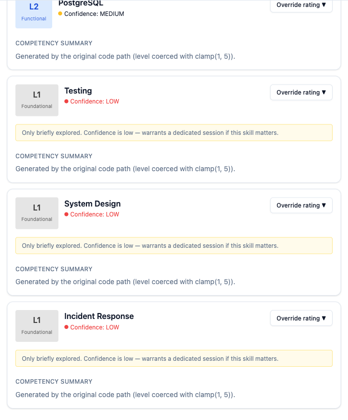
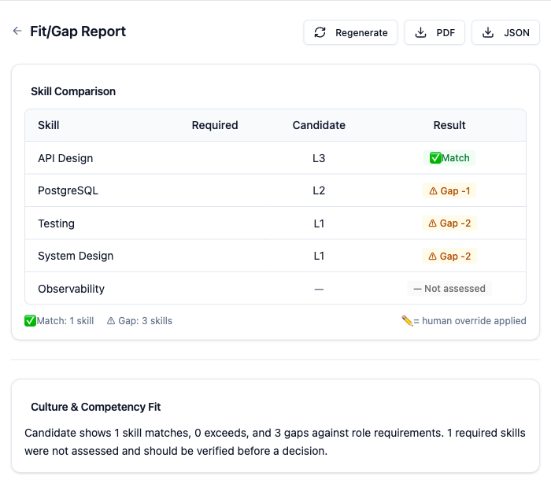
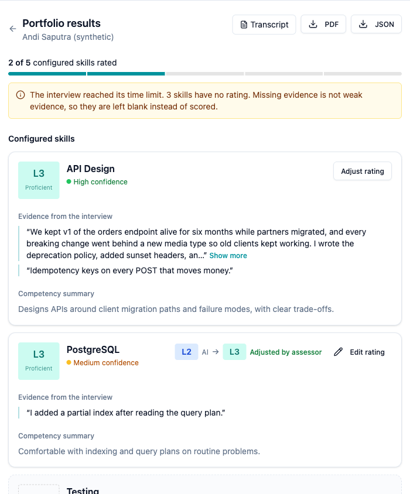
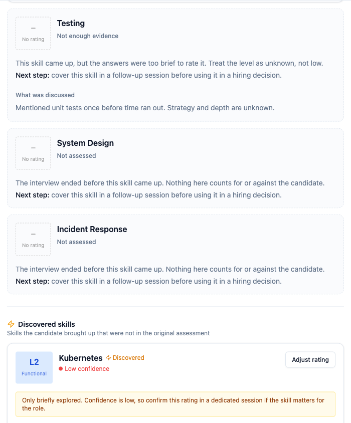
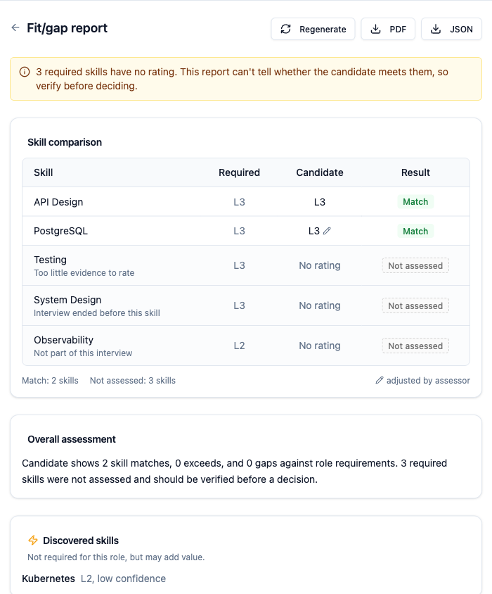
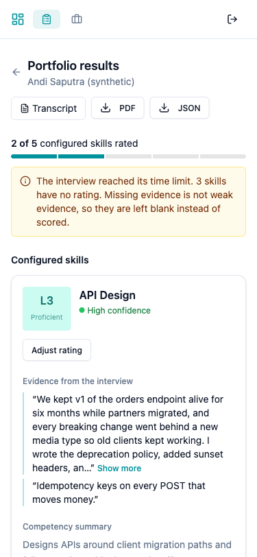
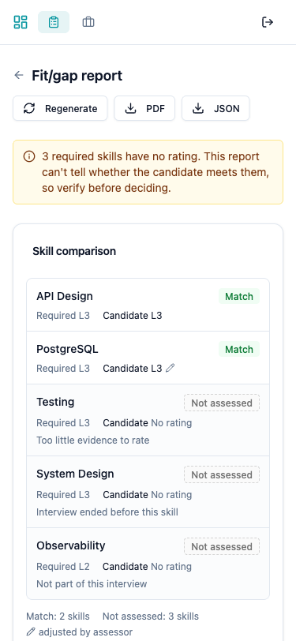
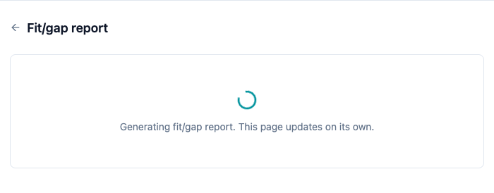
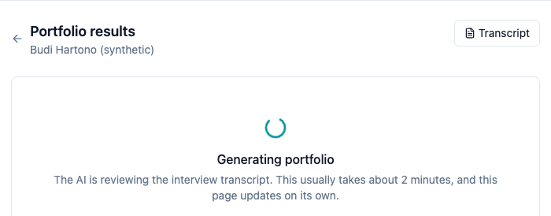
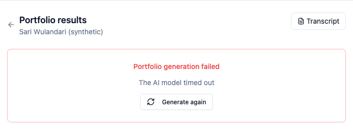
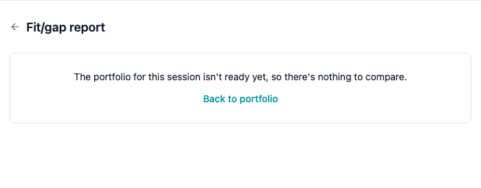
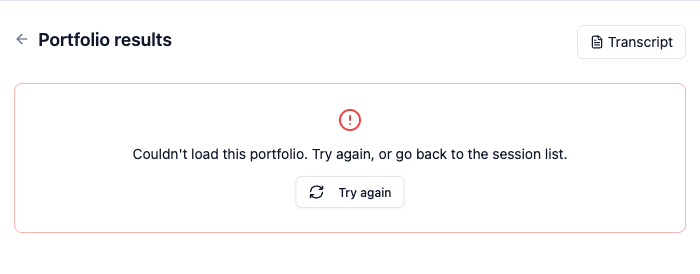
| Suite | Files | Result |
|---|---|---|
| RSpec (api) | services/portfolios/generator_spec, services/fit_gap/engine_spec, requests/portfolio_tenant_isolation_spec, requests/fit_gap_spec, requests/portfolio_skills_spec, requests/portfolios_spec, models/portfolio_skill_spec, workers/portfolio_generator_worker_spec | 49 examples, 0 failures |
| Vitest (web) | utils/skills.test, SkillPortfolioCard.test, ComparisonTable.test, FitGapReportPage.test | 18 tests, 0 failures |
| CI | .github/workflows/ci.yml: Postgres + Redis services → migrate → RSpec; npm ci → tsc → Vitest → build | Simulated locally on a freshly created test DB |
Coverage percentage is not measured (no SimpleCov / c8 configured). The claim is behavioural: every acceptance criterion in section 6 maps to a test.
02641c0): 5 of 7 failing with 200/201/202 instead of 404. Green after 259d132. Logs: evidence/01-…-red.txt, 02-…-green.txt.evidence/04-…). To be precise: part of that count comes from the intentional change in the model's output schema, not only from the L1 bug.scratch/seeded-fault, merged with history)* b700dc2 Merge seeded fault test history |\ | * 8b1bb34 Revert "SEEDED FAULT: fall back to L1 when the model gives no level" | * 7994a3f Revert "SEEDED FAULT: read required_level in the comparison table" | * 5c9498a SEEDED FAULT: read required_level in the comparison table | * f92944f SEEDED FAULT: fall back to L1 when the model gives no level |/ * dabbe91 Add CI for API specs and web type-check, tests and build
f92944f): treat any discussed skill as assessed with level || 1. RSpec: 49 examples, 8 failures, e.g. expected assessment_status "insufficient_evidence", ai_level nil, but had "assessed", 1.5c9498a): read required_level again. Vitest: 1 failed, "shows the required level sent by the API".dabbe91. Logs in evidence/05–08.I used an AI coding assistant throughout. These are the cases where its output was wrong or risky, and how I caught them.
(status = 'assessed' AND ai_level BETWEEN 1 AND 5) OR (status <> 'assessed' AND ai_level IS NULL). It reads correctly, but in SQL's three-valued logic an assessed row with a NULL level evaluates to NULL OR FALSE = NULL, and PostgreSQL treats a NULL CHECK as passing. I caught it by inserting that exact row with raw SQL: it was accepted. Fixed with ai_level IS NOT NULL, re-verified (now PG::CheckViolation), and pinned with a model spec that bypasses validations. Evidence: evidence/03a-… (bug) and 03-… (fixed).update_all, which bypasses the in-memory object. On failure, portfolio.update!(generation_status: 'failed') saw no change from the stale in-memory value and wrote nothing, so the portfolio would spin forever. The "save fails half-way" spec caught it (expected "failed", got "generating"). Fixed by reloading after a successful claim.joins(:session) on the belief that it ignores Session's tenant default_scope. Checking the generated SQL showed it does apply it. I kept the explicit subquery anyway because it doesn't depend on that subtle behaviour, but the stated reason was wrong.audio_complete hardening (P0-3): verify coverage or session state server-side. Not done, because its timing with the WebSocket flow can't be tested here.regenerate_fitgap should keep the old report until the new one succeeds (P2-6).(portfolio_id, skill_label) after a duplicate audit.